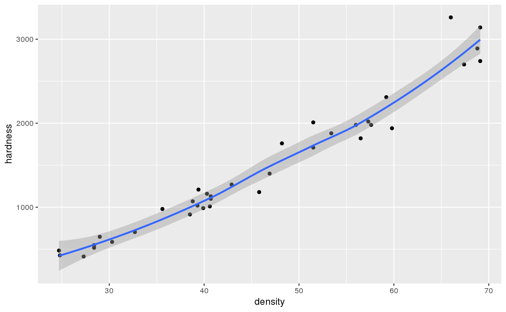

The dataset consists of density and hardness measurements from 36 Australian Eucalypt hardwoods.
JANKAA data frame with 36 observations on the following 2 variables:
density (a measure of density of the timber)
hardness (the Janka hardness of the timber)
Williams, E.J. 1959. Regression Analysis. John Wiley & Sons, New York.
Janka hardness is a structural property of Australian hardwood timbers. The Janka hardness test measures the force required to imbed a steel ball into a piece of wood.
Ugarte, M. D., Militino, A. F., and Arnholt, A. T. 2015. Probability and Statistics with R, Second Edition. Chapman & Hall / CRC.
ggplot(data = JANKA, aes(x = density, y = hardness)) + geom_point() + geom_smooth()
#> `geom_smooth()` using method = 'loess' and formula 'y ~ x'
